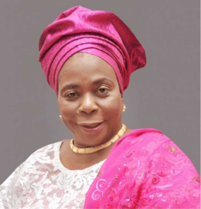
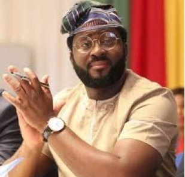
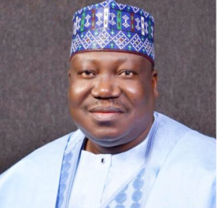
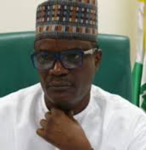
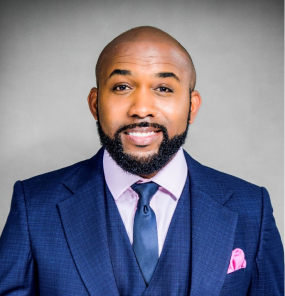

Abiodun Olujimi

She was born in Omuo Ekiti, Ekiti State. Her schooling began at Our Lady of Apostles School in Ibadan, Oyo State, and continued at the Nigerian Institute of Journalism, where she graduated with a diploma in 1976. From the University of Abuja, Biodun Olujimi earned degrees in Political Science and a Postgraduate degree in Public Relations and Marketing.
She worked as a journalist for the Nigerian Tribune, Nigerian Posts and Telecommunications, Nigerian Television Authority, Delta Steel Company, Ovwian Aladja, Reflex Concept, and DBN Television, where she was the Manager from 1993 to 1997. She joined the Peoples Democratic Party (PDP) in 2002, and this was the start of her political career. She became the Special Assistant to the Executive Governor of Ekiti State in 2003, and was later elected to the Federal House of Assembly. In 2005, she was appointed Deputy Governor of Ekiti State, alongside Governor Ayo Fayose.
Olujimi rose to serve as the Commissioner for Works and Infrastructure in her state and then as the Director of Women Affairs. She ran for and won a Senate seat in 2015, representing the Ekiti South constituency in the National Assembly under the Peoples Democratic Party.
She worked as a journalist for the Nigerian Tribune, Nigerian Posts and Telecommunications, Nigerian Television Authority, Delta Steel Company, Ovwian Aladja, Reflex Concept, and DBN Television, where she was the Manager from 1993 to 1997. She joined the Peoples Democratic Party (PDP) in 2002, and this was the start of her political career. She became the Special Assistant to the Executive Governor of Ekiti State in 2003, and was later elected to the Federal House of Assembly. In 2005, she was appointed Deputy Governor of Ekiti State, alongside Governor Ayo Fayose.
Olujimi rose to serve as the Commissioner for Works and Infrastructure in her state and then as the Director of Women Affairs. She ran for and won a Senate seat in 2015, representing the Ekiti South constituency in the National Assembly under the Peoples Democratic Party.

Desmond Elliot

Desmond Elliot (born Desmond Oluwashola Elliot; 4 February, 1974) is a Nigerian actor, director, and politician who has starred in over two hundred films and a number of television shows and soap operas. He was elected as a lawmaker of the Lagos State House of Assembly, Surulere Constituency, in the 11 April, 2015 Nigerian General Elections.
An economics graduate of Lagos state university, Desmond took up acting and became one of Nollywood's leading actors, having appeared in over two hundred films.
In September 201, he ran for Lagos State House of Assembly under the All Progressives Congress. He contested and won the Surulere Constituency in the 11 April 2015 Nigerian General Elections.In October 2020, during the End SARS protest, Desmond was heavily criticized for allegedly supporting Anti-Social Media Bill in Nigeria; an allegation he earlier denied when the news first filtered in via social media. In a viral video circulating all over the internet, he was seen vehemently criticizing social media users and influencers and stating that if the Nigerian state doesn't stop social media, social media will destroy the Nigerian state.
An economics graduate of Lagos state university, Desmond took up acting and became one of Nollywood's leading actors, having appeared in over two hundred films.
In September 201, he ran for Lagos State House of Assembly under the All Progressives Congress. He contested and won the Surulere Constituency in the 11 April 2015 Nigerian General Elections.In October 2020, during the End SARS protest, Desmond was heavily criticized for allegedly supporting Anti-Social Media Bill in Nigeria; an allegation he earlier denied when the news first filtered in via social media. In a viral video circulating all over the internet, he was seen vehemently criticizing social media users and influencers and stating that if the Nigerian state doesn't stop social media, social media will destroy the Nigerian state.

Ahmed Ibrahim Lawan

Lawan was a lecturer at a Nigerian federal institution in Maiduguri, Borno North-Eastern state, as well as a politician and senator. In 1984, he graduated from the University of Maiduguri with a bachelor's degree in geography.
In 1990 and 1996, he received a postgraduate diploma in land surveying from Ahmadu Bello University, a master's degree in remote sensing from Ahmadu Bello University, and a doctorate in remote sensing/GIS from Cranfield University, UK.
Lawan was elected to the House of Representatives in 1999, representing the northern state of Yobe, and has led the House Committees on Education and Agriculture at various times.
In 2007, Lawan was elected to the Senate. He was on the Joint Committee on Constitutional Review of the National Assembly in 2008. In 2009, as head of the Senate Committee on Public Accounts, Lawan introduced and supported the Desertification Control Commission Bill.
In August 2009, Senator Lawan came out against the planned Kafin Zaki Dam. He said that the Tiga Dam and Challawa Gorge Dam had already significantly decreased water flow, and that the Jama'are River was now the Yobe River's primary supply of water. He said that the dams resulted in extreme poverty, desert encroachment, migration, and confrontations between arable farmers and herders.
In 1990 and 1996, he received a postgraduate diploma in land surveying from Ahmadu Bello University, a master's degree in remote sensing from Ahmadu Bello University, and a doctorate in remote sensing/GIS from Cranfield University, UK.
Lawan was elected to the House of Representatives in 1999, representing the northern state of Yobe, and has led the House Committees on Education and Agriculture at various times.
In 2007, Lawan was elected to the Senate. He was on the Joint Committee on Constitutional Review of the National Assembly in 2008. In 2009, as head of the Senate Committee on Public Accounts, Lawan introduced and supported the Desertification Control Commission Bill.
In August 2009, Senator Lawan came out against the planned Kafin Zaki Dam. He said that the Tiga Dam and Challawa Gorge Dam had already significantly decreased water flow, and that the Jama'are River was now the Yobe River's primary supply of water. He said that the dams resulted in extreme poverty, desert encroachment, migration, and confrontations between arable farmers and herders.

usman danjuma shiddi

Usman Danjuma Shiddi (born1967), commonly known as Danji SS, is a Nigerian politician and lawmaker who presently serves in the Federal House of Representatives of the Nigerian National Assembly, representing the Ibi/Wukari Federal Constituency of Taraba State.
In 2019, he defeated Yakubu Aliyara of the Action Alliance (AA), who received 22,147 votes, to win a House of Representatives seat with 39,312 votes. Shiddi is the Chairman of the 9th Nigerian House of Representatives' House Committee on Internal Security and switched to the All Progressives Congress in 2020.
In 2019, he defeated Yakubu Aliyara of the Action Alliance (AA), who received 22,147 votes, to win a House of Representatives seat with 39,312 votes. Shiddi is the Chairman of the 9th Nigerian House of Representatives' House Committee on Internal Security and switched to the All Progressives Congress in 2020.

Bankole Wellington

Olubankole Wellington (born 27 March 1981), popularly known by his stage name Banky W and credited in film as Banky Wellington, is a Nigerian singer, rapper, actor, entrepreneur and politician.
He schooled in Lagos for his primary and secondary education and returned to further his tertiary education at Rensselaer Polytechnic Institute, New York on a scholarship. He started his record label E.M.E in 2002 while studying.
Banky Wellington declared his intention to run for the Lagos' Eti-Osa Federal Constituency seat in Nigeria's House of Representatives, on the platform of the Modern Democratic Party but lost the elections to Babajide Obanikoro of the All Progressive Congress.
He schooled in Lagos for his primary and secondary education and returned to further his tertiary education at Rensselaer Polytechnic Institute, New York on a scholarship. He started his record label E.M.E in 2002 while studying.
Banky Wellington declared his intention to run for the Lagos' Eti-Osa Federal Constituency seat in Nigeria's House of Representatives, on the platform of the Modern Democratic Party but lost the elections to Babajide Obanikoro of the All Progressive Congress.